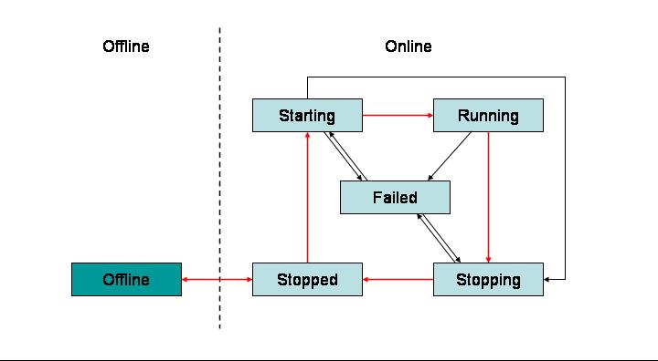

Article donated by: Hernan Cunico
Apache Geronimo overview
Apache Geronimo is a full blown, fully compliant, J2EE 1.4 application server. Geronimo integrates a number of other open source projects as described in the following list:
- Jetty
Jetty is a Web application server supporting Java Servlet 2.4 and JavaServer Pages 2.0. More details on Jetty can be found at the following URL:
http://jetty.mortbay.org/ - Apache Tomcat
Tomcat is a Web application server supporting Java Servlet 2.4 and JavaServer Pages 2.0. More details on Tomcat can be found at the following URL:
http://tomcat.apache.org/ - Apache Derby
Derby is a small footprint, totally functional, Relational Database Management System (RDBMS) with JDBC support. More details on Derby can be found at the following URL:
http://db.apache.org/derby - Apache Axis
Axis is an implementation of the Simple Object Access Protocol (SOAP). Axis provides Web Services and Web Services Interoperability (WS-I) support. More details on Axis can be found at the following URL:
http://ws.apache.org/axis/ - ApacheDS
ApacheDS is an implementation of the Lightweight Directory Access Protocol (LDAP). ApacheDS provides LDAP v3 services, secure authentication methods and extensions for Transport Layer Security (TSL) among others. More details on ApacheDS can be found at the following URL:
http://directory.apache.org/ - TranQL
TranQL is a framework for building persistence engines. More details on TranQL can be found at the following URL:
http://tranql.codehaus.org/ - OpenEJB
OpenEJB is a modular, configurable and extendable open source EJB Container System and EJB Server.
http://www.openejb.org/ - MX4J
MX4J is an implementation of the Java Management Extensions (JMX) and the JMX Remote API (JSR-160). More details on MX4J can be found at the following URL:
http://mx4j.sourceforge.net/ - ActiveMQ
ActiveMQ is a Java Messaging Service (JMS) provider and Message Fabric that supports clustering, multicast, XA and persistence among others. More details on ActiveMQ can be found at the following URL:
http://activemq.codehaus.org/ - Spring framework
Spring is a J2EE application framework to help reduce development effort constructing applications from lightweight Inversion of Control (IoC) components. More details on Spring framework can be found at the following URL:
http://www.springframework.org/
GBeans overview
For a start, almost everything in Apache Geronimo is a Geronimo Bean or more friendly GBean. Apache Geronimo is built on a lightweight kernel that provides central integration. The purpose of this kernel is to manage these GBeans lifecycle and it's dependencies.
GBeans are the building blocks that Apache Geronimo is made of. As previously stated, almost everything in Geronimo is a GBean, that is containers, applications, connectors, etc, so one GBean can certainly aggregate other GBeans, specially large ones. A Geronimo server instance is basically a collection of GBeans so the Geronimo kernel would essentially be a GBean container.
GBeans can hold states, define dependencies (internal and external) and react to certain life cycle events. This capability can be used to store GBean's current state and recover that state at a later time. GBeans can also be managed through a management interface (command line or Geronimo Console), enabling them to be started, stopped and edited on the fly.
GBeans may register interest on the status of other GBeans with particular characteristics. When a GBean with those characteristics is started, a reference to that GBean is injected into the GBean that registered interest. This process is known as dependency injection and makes GBeans a powerful framework for building loosely coupled systems.
In short, GBeans framework provides:
- Inversion of Control (IoC) components style model.
- Logical identity coupled to a classification model.
- Managed attributes, intended for configuration/instrumentation.
- Persistent attributes, properties stored when offline.
- Logical operations that can be remapped.
- References to and dependencies on other GBeans.
- Lifecycle model.
The following figure illustrates the GBeans lifecycle.

{kind=link}